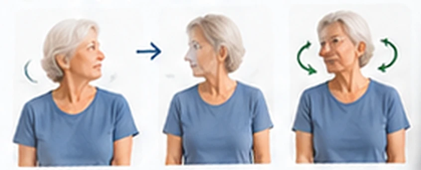
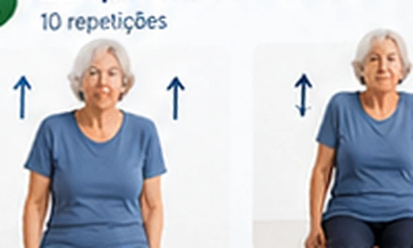
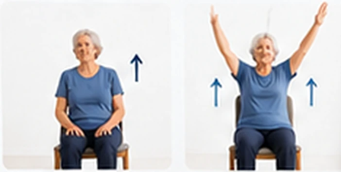
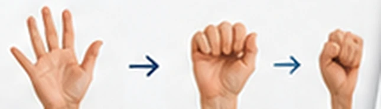
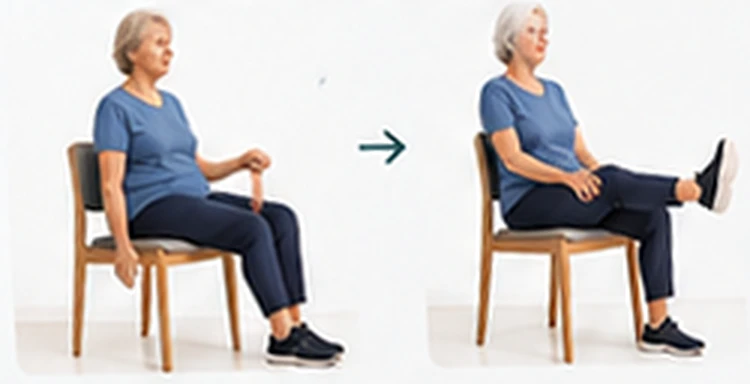
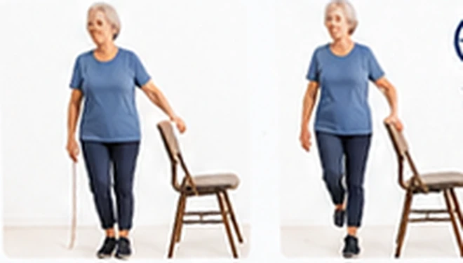
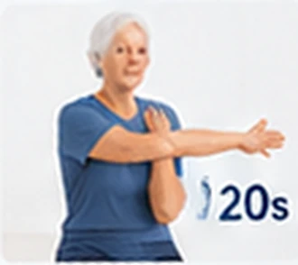
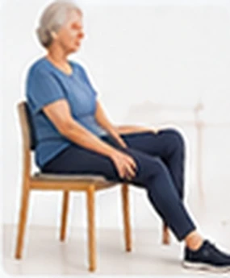

Movimentos lentos e suaves para aliviar a rigidez e manter a mobilidade, feitos sentado.
Exercícios com apoio para manter a força e a funcionalidade nas atividades do dia a dia.
Fortalecimento adaptado, sentado na cadeira, para dar mais segurança ao levantar e se locomover.
Treinos sempre com um ponto de apoio, como cadeira ou parede, para mais estabilidade no dia a dia.
Alongamentos confortáveis, respeitando os limites de cada pessoa, para manter a flexibilidade.
Um plano pronto, de segunda a domingo, que combina os blocos e pode ser adaptado à rotina.
Serve para atendimento individual, em família ou em turma, por cuidadores e profissionais.
Este kit é um guia prático de exercícios para idosos com mobilidade reduzida, organizado em blocos, com passo a passo ilustrado e repetições indicadas, para você saber exatamente o que fazer em cada dia.
Com ele, você para de improvisar. Cada bloco traz movimentos feitos sentado ou com apoio, a quantidade de repetições e uma dica de segurança para fazer tudo com tranquilidade.
É uma forma simples de ajudar o idoso a se movimentar com mais autonomia, e de dar a quem cuida, a quem treina e a quem atende uma rotina clara para seguir.
O problema não é falta de vontade. É faltar um material organizado, simples e pensado para mobilidade reduzida.








Para quem quer sair do sedentarismo com calma: movimentos simples, no seu ritmo, sem sair de casa.
Para quem quer ajudar um pai, uma mãe ou um avô a se movimentar, com um passo a passo fácil de acompanhar.
Atividades prontas para incluir na rotina do dia, sem improviso e com mais segurança para quem cuida.
Variedade para planejar aulas e atendimentos de idosos sem gastar horas montando tudo do zero.
Exercícios organizados por bloco e com progressão, para apoiar o plano de atendimento de cada paciente.
Pagamento único. Acesso digital imediato após a confirmação.
O essencial para começar
Acesso total + bônus exclusivos
Use o material por 7 dias. Se não for o que você esperava, devolvemos 100% do valor. Basta enviar uma mensagem.
QUERO O KIT COMPLETODepois da confirmação do pagamento, o acesso é liberado de forma digital e imediata por e-mail.
Sim. O material é digital, abre no celular, no tablet ou no computador e pode ser impresso.
Os exercícios são pensados para fazer sentado ou com apoio. Mesmo assim, converse com o médico ou o fisioterapeuta antes de começar.
Não. A maior parte das atividades usa só uma cadeira firme e o peso do próprio corpo.
Sim. As rotinas servem para uso individual, em família ou em turmas, por cuidadores e profissionais.
O pagamento é único e o acesso é vitalício.